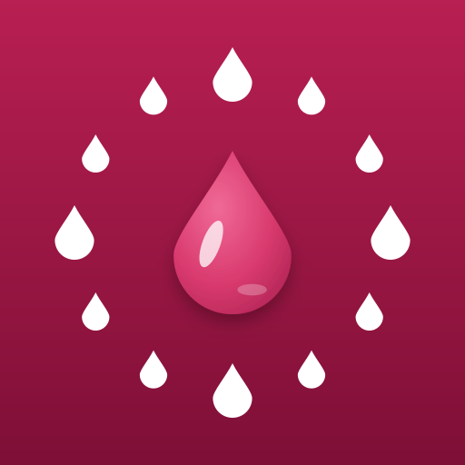

Red Days · Червоні дніEffective date: 24 November 2026
Red Days is a free period diary app by Korol Serhii, an independent developer. Contact: korolserhii.dev@gmail.com. By installing or using the app you accept these terms.
The app is intended for adults (18+).
Red Days is a personal diary, not a medical device. It does not diagnose, treat, cure or prevent any disease, does not replace a doctor and is not a method of contraception. It shows no forecasts, "safe days" or ovulation. Hints in the app are general information based on published guidelines; decisions about your health should be made with a healthcare professional. In an emergency, contact emergency services.
Everything you enter stays on your phone (see the Privacy Policy). You are responsible for your device and for any files you export or share. If you uninstall the app or use Settings → Start over without a backup, your entries cannot be restored.
We work to keep the app accurate and reliable, but it is provided "as is", without warranties of any kind. To the extent permitted by law, the developer is not liable for damages arising from the use of the app or from decisions made based on it. This does not limit any rights you have under mandatory consumer protection law.
The app and these terms may change. The current version is always published on this page with its effective date.
Набирають чинності: 24 листопада 2026 р.
«Червоні дні» (Red Days) — безкоштовний щоденник менструального циклу від незалежного розробника Сергія Короля. Контакт: korolserhii.dev@gmail.com. Встановлюючи застосунок або користуючись ним, ви приймаєте ці умови.
Застосунок призначений для дорослих (18+).
«Червоні дні» — особистий щоденник, а не медичний виріб. Він не діагностує, не лікує, не виліковує й не запобігає жодній хворобі, не замінює лікаря і не є засобом контрацепції. Застосунок не показує прогнозів, «безпечних днів» чи овуляції. Підказки в ньому — загальна інформація на основі опублікованих рекомендацій; рішення щодо здоров’я ухвалюйте разом із лікарем. У невідкладному стані звертайтеся до екстреної допомоги.
Усе, що ви вводите, зберігається лише на вашому телефоні (див. Політику конфіденційності). Ви відповідаєте за свій пристрій і за файли, які експортуєте чи пересилаєте. Якщо видалити застосунок або скористатися «Почати з нуля» без резервної копії, записи відновити не вдасться.
Ми дбаємо, щоб застосунок був точним і надійним, але він надається «як є», без будь-яких гарантій. У межах, дозволених законом, розробник не відповідає за шкоду, пов’язану з використанням застосунку чи рішеннями, ухваленими на його основі. Це не обмежує ваших прав за обов’язковим законодавством про захист прав споживачів.
Застосунок і ці умови можуть змінюватися. Чинна версія завжди опублікована на цій сторінці з датою набрання чинності.
Obowiązują od: 24 listopada 2026 r.
Red Days to bezpłatny dziennik cyklu niezależnego twórcy Korol Serhii. Kontakt: korolserhii.dev@gmail.com. Instalując aplikację lub korzystając z niej, akceptujesz te warunki.
Aplikacja jest przeznaczona dla dorosłych (18+).
Red Days to osobisty dziennik, a nie wyrób medyczny. Nie diagnozuje, nie leczy, nie wylecza ani nie zapobiega chorobom, nie zastępuje lekarza i nie jest metodą antykoncepcji. Nie pokazuje prognoz, „bezpiecznych dni” ani owulacji. Podpowiedzi to ogólne informacje oparte na opublikowanych wytycznych; decyzje o zdrowiu podejmuj z lekarzem. W nagłym przypadku wezwij pomoc.
Wszystko, co wpiszesz, zostaje w telefonie (zob. Politykę prywatności). Odpowiadasz za swoje urządzenie i za pliki, które eksportujesz lub udostępniasz. Po odinstalowaniu aplikacji lub użyciu „Zacznij od nowa” bez kopii zapasowej wpisów nie da się odzyskać.
Dbamy o dokładność i niezawodność aplikacji, ale jest ona udostępniana „tak jak jest”, bez żadnych gwarancji. W zakresie dozwolonym przez prawo twórca nie odpowiada za szkody wynikające z korzystania z aplikacji ani z decyzji podjętych na jej podstawie. Nie ogranicza to praw wynikających z bezwzględnie obowiązujących przepisów konsumenckich.
Aplikacja i warunki mogą się zmieniać. Aktualna wersja jest zawsze na tej stronie wraz z datą.
Fecha de vigencia: 24 de noviembre de 2026
Red Days es un diario gratuito del ciclo del desarrollador independiente Korol Serhii. Contacto: korolserhii.dev@gmail.com. Al instalar o usar la app aceptas estas condiciones.
La app está pensada para personas adultas (18+).
Red Days es un diario personal, no un producto sanitario. No diagnostica, trata, cura ni previene enfermedades, no sustituye a un médico y no es un método anticonceptivo. No muestra previsiones, «días seguros» ni ovulación. Las indicaciones son información general basada en guías publicadas; las decisiones sobre tu salud tómalas con un profesional. En una urgencia, llama a emergencias.
Todo lo que introduces se queda en tu teléfono (consulta la Política de privacidad). Eres responsable de tu dispositivo y de los archivos que exportes o compartas. Si desinstalas la app o usas «Empezar de cero» sin copia de seguridad, los registros no se pueden recuperar.
Trabajamos para que la app sea precisa y fiable, pero se ofrece «tal cual», sin garantías de ningún tipo. En la medida permitida por la ley, el desarrollador no responde de daños derivados del uso de la app ni de decisiones tomadas con base en ella. Esto no limita tus derechos según la legislación obligatoria de consumo.
La app y estas condiciones pueden cambiar. La versión vigente siempre está en esta página con su fecha.
Gültig ab: 24. November 2026
Red Days ist ein kostenloses Zyklustagebuch des unabhängigen Entwicklers Korol Serhii. Kontakt: korolserhii.dev@gmail.com. Mit der Installation oder Nutzung der App akzeptierst du diese Bedingungen.
Die App richtet sich an Erwachsene (18+).
Red Days ist ein persönliches Tagebuch und kein Medizinprodukt. Die App diagnostiziert, behandelt, heilt oder verhindert keine Krankheit, ersetzt keine Ärztin oder keinen Arzt und ist keine Verhütungsmethode. Sie zeigt keine Prognosen, „sicheren Tage“ oder Eisprünge. Hinweise sind allgemeine Informationen auf Grundlage veröffentlichter Leitlinien; Gesundheitsentscheidungen triffst du mit medizinischem Fachpersonal. Im Notfall wende dich an den Rettungsdienst.
Alles, was du einträgst, bleibt auf deinem Handy (siehe Datenschutzerklärung). Du bist für dein Gerät und für Dateien verantwortlich, die du exportierst oder teilst. Nach dem Deinstallieren oder „Neu beginnen“ ohne Sicherung lassen sich Einträge nicht wiederherstellen.
Wir bemühen uns um eine genaue und zuverlässige App, sie wird aber „wie besehen“ ohne jede Gewähr bereitgestellt. Soweit gesetzlich zulässig, haftet der Entwickler nicht für Schäden aus der Nutzung der App oder aus darauf gestützten Entscheidungen. Zwingende Verbraucherschutzrechte bleiben unberührt.
Die App und diese Bedingungen können sich ändern. Die aktuelle Fassung steht immer mit Datum auf dieser Seite.